Yamaha MT-09 (890cc)
La MT-09 es una naked deportiva con motor tricilíndrico CP3 de 890cc. Ofrece gran torque, diseño agresivo y electrónica avanzada.
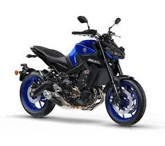
La MT-09 es una naked deportiva con motor tricilíndrico CP3 de 890cc. Ofrece gran torque, diseño agresivo y electrónica avanzada.

La Ducati Streetfighter V4 es una naked extrema derivada de la Panigale con motor Desmosedici Stradale de 1103cc.
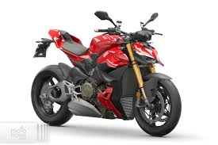
La BMW R 1250 RT es una moto touring diseñada para viajes largos con motor bóxer de 1254cc.
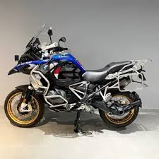
Considerada una de las motos más rápidas del mundo, cuenta con motor supercargado de 998cc y más de 300 HP.
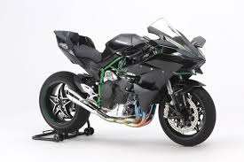
La Z1000 es una naked deportiva con motor de 1043cc. Destaca por su diseño agresivo y gran aceleración.
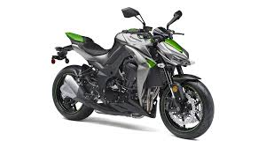
La XJ6 es una naked de 600cc ideal para quienes buscan una moto equilibrada entre potencia y facilidad de manejo.
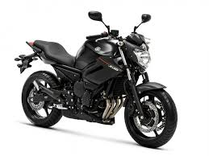
La Honda Hornet 600 es una naked clásica con motor de 599cc derivado de la CBR600.
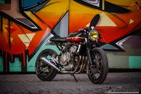
Motor de 998cc, 4 cilindros en línea y tecnología derivada de MotoGP con potencia de 200 HP.
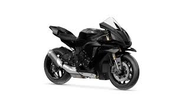
Superbike diseñada para alto rendimiento con motor de 998cc y electrónica avanzada de competición.
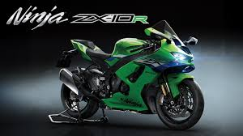
Combina potencia alemana con innovación tecnológica y velocidad máxima superior a los 300 km/h.
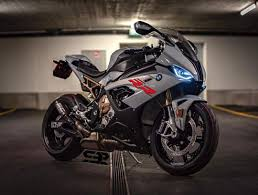
Moto naked deportiva ideal para ciudad con motor de 184cc e inyección electrónica PGM-FI.
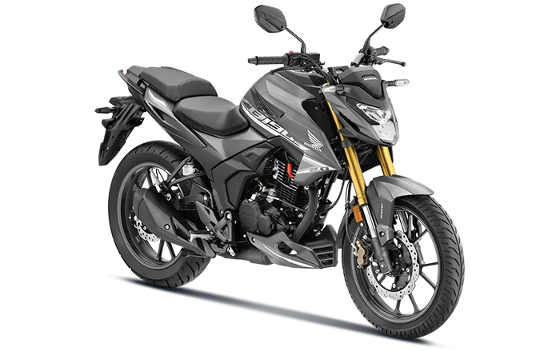
Una de las motos más populares. Su motor de 199.5cc ofrece excelente aceleración y rendimiento deportivo.
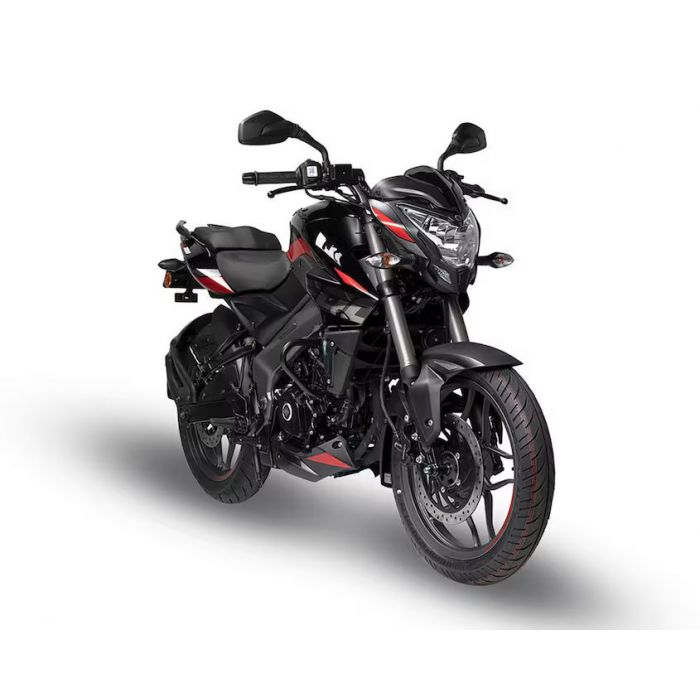
Combina economía y tecnología moderna con un motor de 163cc para un gran desempeño urbano.
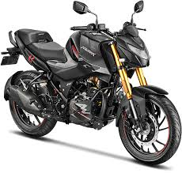
Deportiva ligera con diseño aerodinámico, excelente estabilidad y estilo urbano.
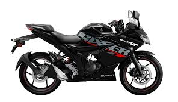
Moto deportiva con excelente relación peso-potencia y gran rendimiento para carretera y pista.
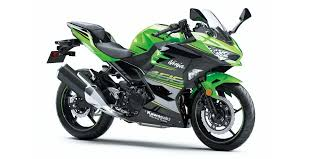
Moto touring diseñada para viajes largos, ofreciendo máxima comodidad, potencia y estabilidad.
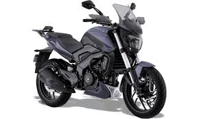